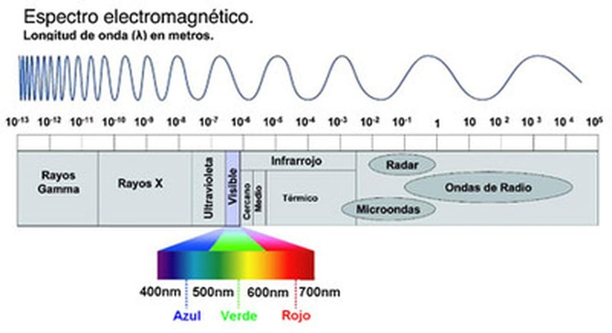
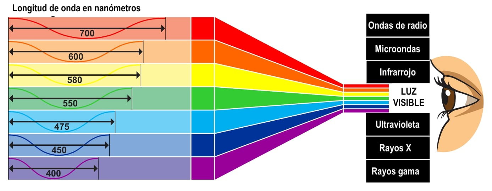

LA FOTOSÍNTESIS Y LA LUZ
La fotosíntesis es un proceso mediante el cual las plantas,
algas verdes y algunas bacterias captan la energía lumínica del Sol y la transforman en energía química
(ATP) y compuestos reductores (NADPH), y con ellos transforman el agua y el dióxido de carbono en
compuestos orgánicos reducidos como la glucosa y liberando O2 a la atmósfera.
La luz tiene una naturaleza dual (partícula y onda), en su forma de vibración u onda y
la manera como vibra se encuentra distribuida en el espectro electromagnético.

Existen diferentes longitudes de onda y de acuerdo con esta se dividen en:
• RAYOS ULTRAVIOLETA A B Y C. No son visibles por el ojo humano y tienen diversas propiedades,
como esterilizadores (eliminan gérmenes), y otros son los que nos broncean.
• RANGO VISIBLE. Es la luz que podemos ver y que tiene un rango de colores de acuerdo con su longitud de onda.
• RANGO INFRARROJO. Es la responsable del calor que proporcionan el sol.
Tanto el UV como el infrarrojo no son visibles para el ojo humano, aunque otras especies sí pueden llegar a
percibirlos. La luz puede difractarse o descomponerse en todos los colores al pasar por un prisma. Es justo ese
efecto el que observamos en el cielo durante los arcoiris, ¿lo sabías?
¿Cómo afecta el conocimiento del espectro de luz a la fotosíntesis? En todos los aspectos,
ya que la luz azul tiene una longitud de onda de 450 nanómetros (nm) y la luz roja de 650 nm. Dentro de este
rango, la mayoría de las plantas capturan la energía solar para realizar la fotosíntesis. Sin embargo,
el cultivo de plantas bajo luz artificial, se diseñan condiciones eficientes utilizando luces rojas y azules.
Estas técnicas se emplean en invernaderos y cultivos verticales para ajustar la luz y mejorar el rendimiento de
las plantas.
La productividad vegetal y la salud del ecosistema está estrechamente vinculada a la cantidad de sol que un
área recibe. La luz solar es fundamental para la fotosíntesis, el proceso mediante el cual las plantas
convierten la energía solar en energía química, producen oxígeno y nutrientes esenciales para otros organismos.
